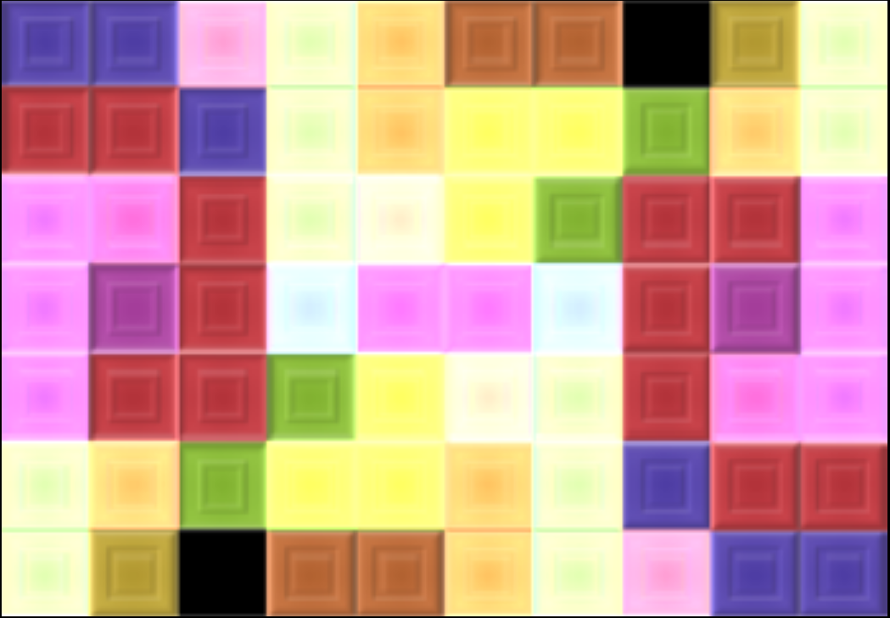

Godfrey Lam's Website
歡迎嚟到我嘅網站
About Me
I am a 3rd year student at Heriot-Watt University currently undertaking a Bachelor's degree in Computer Science (Cyber Security). I am interested in Cyber Security, Software engineering, and scripting with Python and Bash
My Stuff
University
Here's some stuff I've done as part of University assignments, so unfortunately, I cannot show my exact code or the specifications I followed
A game of Hangman implemented in Java.
Used AWT Swing, and layouts to create a simple user-friendly GUI.
Reads in a list of words from an external file, then creates the user interface itself, which consisted of a button grid, a word grid, and health bar.
Using the concepts of coupling and cohesion, the game logic and the GUI were kept seperate, improving maintainability.
A valuable introduction to event-driven programming, and reinforced OOP principles and developing GUIs.


An image processor written in C
Developed an image processor that applies a rotated image on top of itself, and color normalizes it, writing the processed image to a new file on disk
Used file reading to read/write data, dynamic allocation to handle large images, and indexing logic to manipulate the image itself
Understanding how memory is allocated and the consequences of poor management result in cleaner and more efficient code.
Provided hands on experience with manual memory management and pointer manipulation
Personal
These are some projects I've done outside of University to expand my skillset beyond what I have learnt at University, and to solve small, but real problems with software
GateCrasher - A Python tool to display recent kill activity using the ESI API
The ESI (Eve Swagger interface) was used to retrieve JSON information about systems and calculate the route.
This information was then parsed, and then structured into Python data types, before displayed in the CLI.
Programming principles such as cohesion and coupling are followed, ensuring the logic, and CLI are kept seperate, improving maintainability.

A link to my GitHub
Contact Me
You can send me an email here.
Or check out my LinkedIn, I would love to connect!